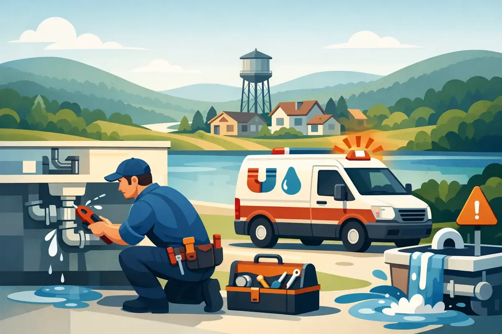

Water on the floor at 10 p.m. is not a problem that can wait for a convenient appointment. A search for emergency plumbing services woodbury tn usually means someone is trying to protect a home, a business, or both from a fast-moving mess. The right next step is simple: stop the water if you safely can, keep people away from electrical hazards, and call for professional help.
Some plumbing problems are disruptive but can wait until morning. Others can damage floors, walls, belongings, and building systems by the minute. Knowing the difference helps you act quickly without guessing.
When to Call for Emergency Plumbing Services in Woodbury, TN
An emergency is not defined by how inconvenient a problem feels. It is defined by the immediate risk of water damage, sewage exposure, loss of essential service, or property interruption. A steady drip from a faucet may be a scheduled repair. Water pouring from a ceiling, a sewer backup in a bathroom, or a failed water heater is a different situation.
Call for emergency service when a pipe has burst, a major leak will not stop, or water is spreading into rooms, cabinets, ceilings, or crawl spaces. A backed-up sewer line also deserves immediate attention, especially when wastewater is rising through a tub, shower, or floor drain. Sewage carries contaminants and should be kept away from children, pets, and occupied areas.
No hot water is sometimes an emergency and sometimes a next-day repair. For a family with a leaking water heater, a commercial kitchen that depends on hot water, or a property with an elderly resident, the need is more urgent. The same is true when the water heater has a gas smell, is making unusual noises, or is releasing water onto the floor.
Commercial property owners should also act quickly when a plumbing failure threatens customer areas, restrooms, food service operations, or equipment. A small leak behind a wall can become a costly interruption if it is ignored overnight.
What to Do Before the Plumber Arrives
Your first goal is to limit damage, not diagnose the entire plumbing system. If water is actively flowing, locate the main water shutoff valve. It is often near the water meter, where the main line enters the building, or in a utility area. Turn the valve clockwise to shut off the water. If only one fixture is leaking, its local shutoff valve may stop the problem without turning off water to the whole property.
If a water heater is leaking heavily, turn off the cold-water supply valve above the unit if it is safe to reach. For an electric water heater, turn off power at the breaker before touching anything near standing water. For a gas unit, do not attempt repairs yourself. If you smell gas, leave the area, avoid switches and open flames, and contact the gas utility or emergency services as appropriate.
Move rugs, boxes, furniture, and valuables away from the affected area. Use towels or a wet vacuum only when there is no electrical risk. Take a few photos of visible damage for your records, but do not delay the service call to document every detail.
Avoid using chemical drain cleaners during a drain or sewer emergency. They can damage piping, create hazardous splashes, and make conditions more dangerous for the technician. A plunger may help a single toilet clog, but repeated flushing when the toilet is backing up can turn a manageable issue into a larger cleanup.
Common Plumbing Emergencies and What They May Mean
A burst pipe can happen because of corrosion, an aging fitting, a failed supply line, or a sudden pressure issue. The visible break is often only part of the job. A qualified plumber needs to repair the line, identify why it failed, and check for related damage or weak connections nearby.
Sewer backups require careful troubleshooting because the source may be a blocked branch line, a main sewer obstruction, invasive roots, or a damaged pipe. If multiple drains are slow or wastewater appears in the lowest fixture, the main line is more likely involved. That is not a situation to solve with a store-bought cleaner.
Water heater failures can range from a replaceable valve to a tank that has reached the end of its useful life. A tank leak from the body of the unit usually points to internal corrosion and often means replacement is the practical choice. The best replacement depends on household demand, fuel type, available space, and budget. Conventional tank, tankless, and heat-pump water heaters each have advantages, but the right answer depends on the property.
A hidden leak can be quieter but just as serious. Watch for a sudden jump in the water bill, warm or damp spots on floors, staining on ceilings, peeling paint, or the sound of running water when every fixture is off. Fast leak detection can prevent structural damage and mold concerns.
Why a Fast, Respectful Response Matters
Plumbing emergencies are stressful because they happen inside the spaces your family or customers depend on. You need more than a quick patch. You need clear communication about what failed, what needs to happen now, and what may be worth planning for later.
That is why live phone support, upfront pricing, and respectful in-home service matter. A technician should explain the repair in plain language, protect the work area as much as possible, and answer questions before work begins. Homeowners should never feel pressured into a major replacement when a safe repair is available. At the same time, an honest plumber should not recommend a temporary repair when it is likely to fail again soon.
Angle Stop Plumbing brings veteran-owned discipline, 31 years of plumbing experience, and a family-centered approach to urgent plumbing needs across Middle Tennessee. The team is available 24/7 for emergencies and stands behind its work with a workmanship warranty, satisfaction guarantee, and No Foul Language Guarantee.
Preventing the Next After-Hours Call
Not every emergency can be avoided, but routine attention reduces the odds. Have your water heater inspected before it begins leaking, address recurring drain slowdowns before they become backups, and replace aging supply lines before one fails behind a washing machine or under a sink.
For homes that are vacant part of the day or properties managed from a distance, a smart water shutoff valve can add valuable protection. These systems can detect unusual water flow and, depending on the equipment and setup, shut off the water before a leak causes extensive damage. Whole-home plumbing inspections and ongoing maintenance memberships can also help identify worn fixtures, aging valves, pressure concerns, and early signs of leaks.
If your home uses a water softener, filtration system, or other water-treatment equipment, include it in regular maintenance. Poor water quality can contribute to scale buildup, appliance wear, and reduced water heater efficiency over time.
When water is moving where it should not, act early and stay calm. Shut off the water when it is safe, protect the people and property around the leak, and get a courteous plumbing professional involved before a small failure has the chance to become a much larger repair.